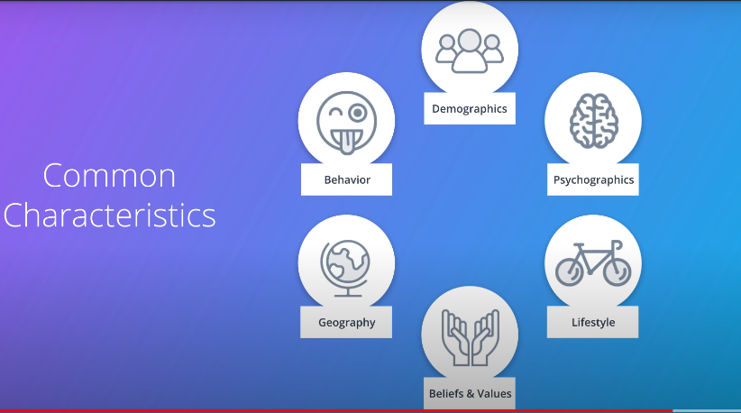
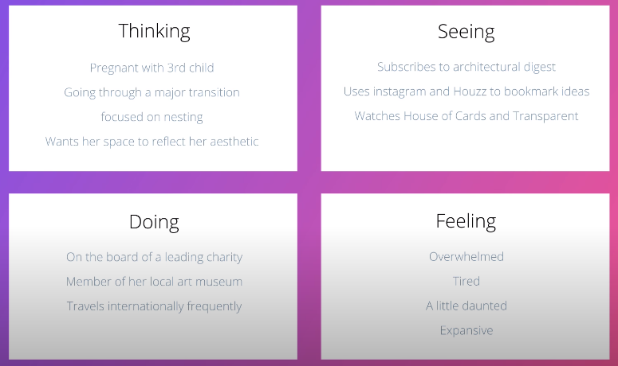
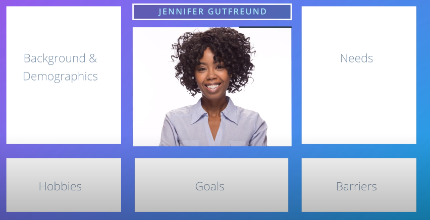
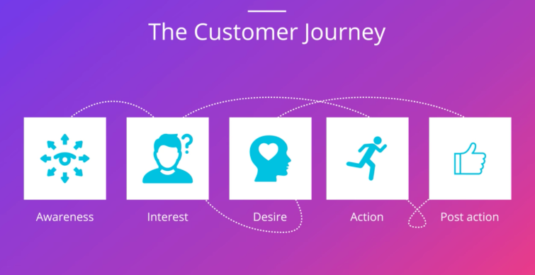

Marketing Plan: Who?
If you think your customer is everyone, you making a classic marketing mistake, when you market to everyone you market to no one

Segments tell you something about your customer type, but to market effectively, you need to also understand your customer at the individual level
----------------------------------------------------------------------------------------------
Empathy Maps

-------------------------------------------------------------------------------------------------------------Target Personas
Persona-->is a fictional character that summarizes and communicates the key characteristics of your target customer, it's good to give your persona name and picture

https://blog.hubspot.com/marketing/buyer-persona-questions#sm.0001l6650q2kfedtyih24xsgjv28t
https://blog.hubspot.com/marketing/buyer-persona-research#sm.0001l6650q2kfedtyih24xsgjv28t
https://blog.hubspot.com/marketing/buyer-persona-examples#sm.000118qkvc1btje1fyxnwlbh0ar9h
---------------------------------------------------------------------------
The Customer Journey
Marketers have moved away from the funnel concept and now call it the customer journey, most customers don't step through stages in sequence, they bounce around

Awareness-->This stage requires digital marketing to establish your brand and let customers know who you are and what you do
Interest-->This stage requires digital marketing that informs the customer about your product or service
Desire-->This stage requires digital marketing that makes it clear why a customer should choose your business for desired product or service over another
Action-->This could be signing up to an email newsletter, downloading a white paper, install app or making a purchase,This stage requires digital marketing that make customers comfortable taking action, for ex: making clear what the price is
Post Action-->It describes how you interact with the customer after he take an action
--------------------------------------------------------------------------------------